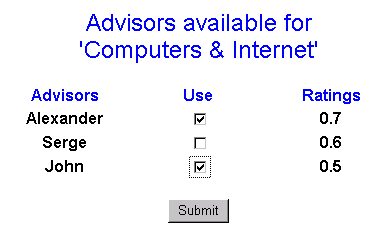

Message selection facility (MSF)
| MSF presents a user a predefined catalog of named ratings/fields of interests. For information on how this catalog is defined/updated consult Rate Facility. A user is able to navigate through the catalog in order to locate his/her field of interest. Another option is a search service, which can search through the catalog for a specified word(s). |
|
 |
After selecting a field of interest (named rating), user will be
presented a list of advisors (who serve this area of interest) sorted by rating. For
information on how this rating is calculated/updated consult Rate
Facility. This list of advisors includes all types of advisors that exist in the
system: human advisors, Spam filters, kill files etc. User will see no difference between
different types of advisors. After selecting advisors user is forwarded to a Message browsing facility. |